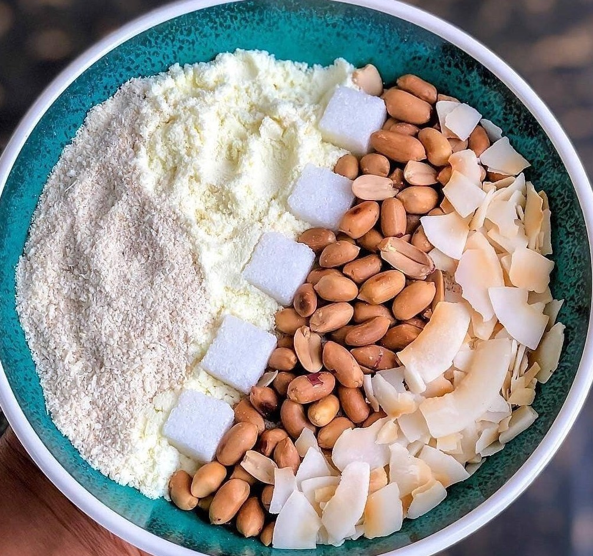

Mama's kitchen
Home
|
Recipes
|
About
Smoky Party Jollof Rice
A classic Nigerian favourite. This recipes feeds a crowd and tastes even better the next day.

Fresh from the pot, ready to serve
Ingredients
- 3 cups long-grain parboiled rice
- 6 fresh tomatoes and 2 red bell peppers
- 2 onions and 1 scotch bonnet
- Tomato paste, thyme and curry powder
- Vegetable oil and chicken stock
Method
- Blend the tomatoes, peppers and onions.
- Fry the tomato paste, then add the blend
- Season, add stock and the washed rice
- Cover tightly and cook on low heat for 30 minutes.
Quick Facts
- Prep Time: 15 minutes
- Cook Time: 45 minutes
- Serves: 6 people
Want more?
Read about the history of Jollof Rice
© 2024 Mama's Kitchen
Back to top